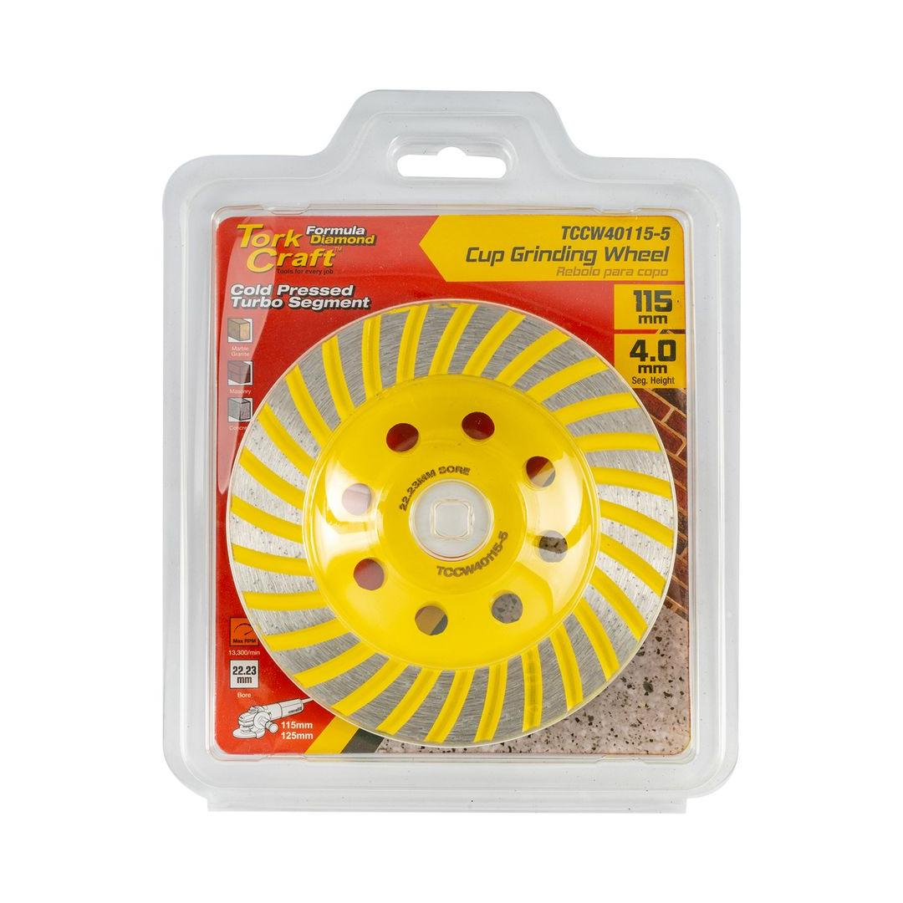
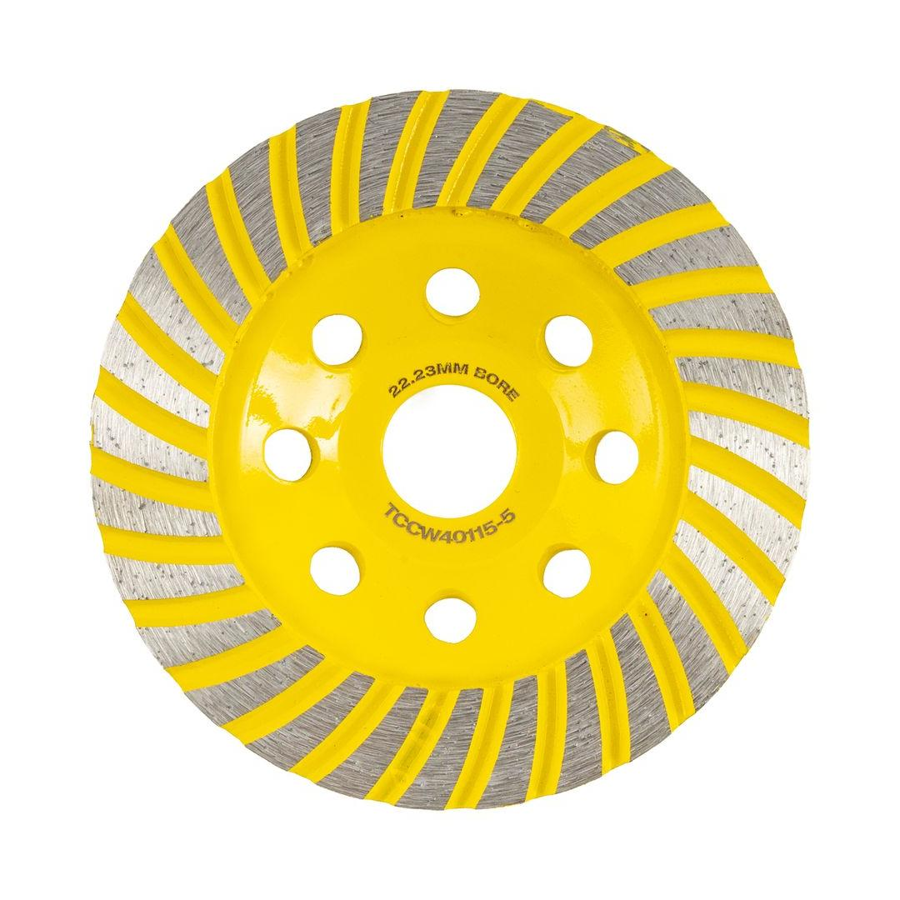

TCCW40115-5


Cup Diameter: 115mm
Arbor: 22.23mm
Max RPM: 13 300
Segment Configuration: Turbo
Classification: Yellow (Standard)
This cold-pressed, turbo-style diamond cup wheel is an economical yet high-performing tool, designed for fast and smooth grinding. With a 115mm diameter and a 22.23mm bore, it is compatible with most standard angle grinders, offering versatility for a range of applications. The continuous, segmented turbo rim provides a consistent and aggressive grinding action while minimizing chipping, making it ideal for tasks that require both rapid material removal and a high-quality finish. Whether you&re smoothing concrete floors, preparing surfaces for new installations, or working on stone and masonry, this durable and affordable wheel is a great choice for professional contractors and DIY enthusiasts seeking a reliable and efficient tool.
Application: